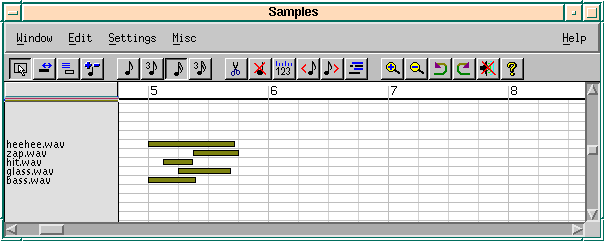
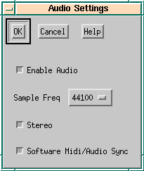
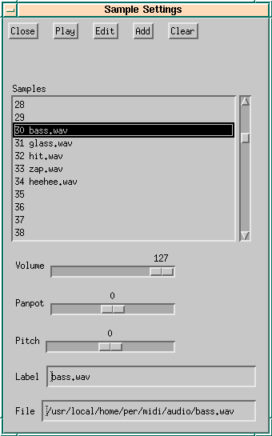
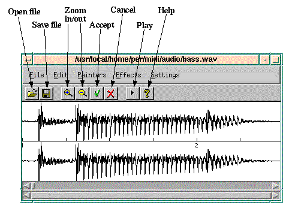

| [ Previous ] [ Contents ] [ Next ] | Jazz++ Manual |
Audio signal processing is a very CPU and memory intensive task. For satisfying results we recommend a pentium processor with 32 MB RAM or up.
The audio part of JAZZ++ is organized similar to a sampler or a drum machine. That is, you can assign a sound sample to every midi key. This is different to a usual synthesizer where you assign a sound to a midi channel and the note only changes the pitch. So an audio track in JAZZ++ is very much like a drum track. On a drum track, every note plays another instrument, on an audio track every note plays another sample.
You assign samples to midi keys using the \helpref{Sample Settings Dialog}{samplesettings}. JAZZ++ then loads the samples into memory. You may use samples with different sampling rates and channels (mono, stereo) in one song, JAZZ++ converts all samples into the format you specify in the \helpref{Global Settings Dialog}{globalsettings}. The collection of samples you define in the Sample Settings Dialog is called a {\em Sample Set} in JAZZ++.
After defining a sample set, you should define an audio track. You do this in the track window by opening the \helpref{Track Dialog}{trackdlg} and check the entry called Audio Track. Audio tracks behave the same way like drum tracks or other midi tracks. E.g you can place individual notes on the track, copy, delete or replicate bars etc. Every note on the audio track corresponds to a sample you just defined.
\begin{figure} \latexonly{

} \htmlonly{\image{0cm;0cm}{audiotrk.png}} \caption{Audio track in pianowin} \end{figure}Next open the piano window on that track by clicking with the right mouse button on the audio track you just created. When you scroll up and down you should see the labels of the samples on the left hand side of the window (the labels are assigned in the Sample Settings Dialog). When you click on one of the labels, you should hear the sound of that sample.
Next select the 1/16 note in the toolbar to be able to place some notes on the track. Then set a few notes. When placing a note, you will hear the sample too. Also you may notice, that the length of the note is not 1/16 but is as long as the sample is according to the current midi speed. When you change the midi speed in the trackwin, you will see that the note length is adjusted to the new speed (by the way: this way you can easily adjust the midi speed to a drum loop sample).
Now you are ready to listen to your new song. Go back to the track window and click on the start play toolbar button. And voila, you will hear your new audio enabled song.
Audio record works much the same way like midi record. Select some bars on an audio track where you want to record an audio signal. Then press the record button. More on record / play you can read \helpref{here}{recplay}. While recording you may not hear other samples depending on the capabilities of your sound card. Most sound cards do not support simultaneous record and playback.
When you have finished recording, stop the operation by clicking on the play or record button again. JAZZ++ will then ask you, if you want to keep the recording. When you answer yes, you will get the file selector dialog to specify the audio file for your recording. The recording will be saved in the Microsoft .wav format. Also JAZZ++ automatically assigns a midi note to your new sample and places a note on the recorded audio track. If you don’t like your recording and you do it again, you should save it under the same file name as the old recording. Then JAZZ++ will reuse the same midi note and not assign a new one.
Please note: when you do audio recording, JAZZ++ needs much memory for the playback too. So you should start playback a few bars before the selection and stop playback a few bars after it. Please do not playback the whole song, when you only want to record a few bars.
\begin{figure} \latexonly{

} \htmlonly{\image{0cm;0cm}{audioset.png}} \caption{Global audio settings dialog} \end{figure}Here you specify the internal resolution for the audio processing of JAZZ++. This means, that all samples are internally converted to the parameters you specify here. If you set the sampling rate to 22050 here and load a sample that was sampled with 11025 samples per second, JAZZ++ will convert it to 22050 samples per second on loading. Specifying low quality here (low sampling rate and mono) will dramatically reduce the CPU and memory requirements needed for processing. Of course this will reduce sound quality too.
\begin{figure} \latexonly{

} \htmlonly{\image{0cm;0cm}{sampset.png}} \caption{Sample settings dialog} \end{figure}In this dialog you define the midi keys for your samples. Please read the \helpref{Introduction}{audiointro} for more information on midi keys for samples.
You add a new sample to the list by selecting an list entry first and then press the add button. In the file selector you choose the sample file you want to play in your song. The only file format supported currently is the Microsoft .wav format. After loading the file you should enter a label (a name for the sample) in the label text entry near the bottom. This label will be shown in the piano window when editing an audio track.
The list shows the available midi keys at the left. Low numbers at the top of the list stand for very low midi keys and high numbers for high midi keys. To avoid scrolling in the piano window you probably want to load the samples somewhere in the middle of the list.
To remove a sample from the list select that entry and press the Clear button. To listen to a sample press the Play button, to interrupt listening press it again. The Edit button invokes the \helpref{Sample Editor}{samplewin}.
The Sample Settings dialogs also allows to adjust volume, pan and pitch of a sample. In opposite to the Sample Editor, these changes are not permanent, e.g if you reduce the volume you can increase it later again with no loss of quality. JAZZ++ applies these settings every time a sample is loaded.
After you have defined a set of samples you want to use, you may save these settings into a .spl file. Close the dialog and select Save Set from the Audio menu in the track window. Please notice, that these files contain all your settings from the Sample Settings Dialog, but they do not contain the samples themselves. The .spl files only contains the filenames of the samples, so if you rename or delete samples, JAZZ++ will not be able to find those samples again.
\begin{figure} \latexonly{

} \htmlonly{\image{0cm;0cm}{sampedit.png}} \caption{Sample editor} \end{figure}The sample editor may be invoked from the \helpref{Sample Settings Dialog}{samplesettings} or from the piano window. In the piano window, the editor is invoked when you select the dialog toolbar button on an audio track and click on a note.
The sample editor shows the waveform of the audio signal and allows you to modify it. There are two scrollbars, the upper one controls the zoom and the lower one the view position.
For some operations (like cut) you must select a range of samples, you can do this by dragging the mouse. Similar to the track window or piano window you may continue a selection by dragging with the shift key down. Clicking again clears the selection. Other operations (like paste) need an insertion point. This is set by clicking into the sample area when there is no selection. The insertion point is displayed as a vertical red line.
A more convenient way to zoom into a part of a sample is to select the range of interest and then click the magnify glass button.
Pressing the play button will play the whole sample by default. If there is a selection, only the selected samples will played. If there is an insertion point, play will start at that point.
After you have modified your sample you may save it. Please note that saving will make the settings in the \helpref{Sample Settings Dialog}{samplesettings} permanent. That is, if you have set the volume e.g. to a value of 50 in the sample settings dialog, the sample will be saved with this volume and you cannot make it louder again without loss of quality. To avoid this, you can set the volume to maximum in the sample settings dialog and leave the pan and pitch sliders neutral before starting to edit. After saving your sample you can change volume etc again.
You may think of the sample settings dialog as some kind of mixer whereas the sample editor really changes the sound source itself.
You have to select a range before using this function.
After selecting a painter command in the menu bar, a paintable area is displayed at the bottom of the window. In this area you may paint some kind of curve. Painting works the same way as in the \helpref{Random Rhythm Generator}{randrhy} and is described there in more detail. After painting you can press the green accept-button in the toolbar or the red crossed cancel button. The operation is applied for the visible range of samples. So if you don’t want to modify the whole sample, zoom to the range of interest before invoking the painter.
This adds a distortion effect to your sample. In the dialog you can paint a distortion curve. When pressing Ok, every sample is mapped to a new value according to the curve. JAZZ++ looks up the original sample value at the horizontal axis and replaces the sample value with the height value of the curve at that point. Because painting smooth curves is difficult, there are some presets, try them out!
The reverb algorithm of JAZZ++ is produces a high quality reverb effect. Parameters of the Reverb Dialog:
In this dialog you can add one or more echos to your sample.
This is some kind of universal effect which can produce chorus-like effects. The operation is quite simple: JAZZ++ takes a copy of the original sample, then modifies it according to the settings in the dialog and finally mixes the modified copy back to the original.
This operation lets you change the pitch of a sample. Pitch changing normally changes the length of the sample too (you can think of a tape machine, where the speed is altered). JAZZ++ however provides algorithms to change the speed without changing the length of the sample.
With the sliders you specify the amount of transposition in semitones. If the box {\em Keep Length} is checked, the transposed sample will have the same length as the original. In this case, JAZZ++ divides the sample into small pieces and plays these pieces with the new speed as often as necessary to match the original length. This may lead to an undesired tremolo effect if the size of the pieces is too big or too small. The slider named window size lets you adjust the size of the pieces.
This is similar to the \helpref{Pitch shifter}{pitchshifter}. You can change the length of the sample here. Changing the length normally changes the pitch of the sample too, but if you check the box labeled {\em Keep Pitch} JAZZ++ will change the length without changing the pitch.
You may specify the new length in seconds (upper sliders) or in terms of midi speed (lower sliders). With the upper sliders you specify the delta length, that is how much time you like to add or subtract from the original length. Eg to make the sample one second shorter, you would set the first slider to -1.
The midi speed sliders are best explained using an example: Lets assume you have a drum loop recorded at a speed of 120 beats per minute. To change the speed (and thus the length) of the sample, to 130 beats per minute, you set the slider {\em old speed} to 120 and the slider {\em new speed} to 130.
The meaning of the window slider is described in the \helpref{Pitch Shifter Dialog}{pitchshifter}.
This reverses the output (think of a tape playing backwards). If there is no selection, the whole sample is reversed.
In this window you can generate new sounds using a noise generator together with additive sound synthesis generators. You may up to 6 generators to build your sound. For each generator you can paint curves for envelope, panpot and pitch. The output of all generators is mixed together to make the final sound.
The toolbar buttons have the following meaning (from left to right):
Near the top of the window you find some checkboxes. The first 4 (Harmonics, Envelope, Panpot and Pitch) switch on and off the corresponding paint areas. This is useful for painting on a small screen. The last one labeled {\it Noise} turns the first generator into a noise generator when checked.
{\bf Noise generator}
In the left paint area labeled {\it noise filter} you can paint the cut off frequency of the noise generator. The slider labeled {\it Midi Key} is ignored in the noise mode.
{\bf Sound generator}
In sound generator mode the left paint area is labeled {\it harmonics}. You can paint the volumes for each harmonic. Note that the 10 leftmost harmonics determine much of the final sound (you have to make the window big to paint these). Harmonics with even numbers sound warmer than harmonics with odd numbers. Most sounds will only have a few harmonics with high volume and especially harmonics with high numbers will have low volume. In this mode the midi key is the base frequency from which the harmonics are calculated.
{\bf working with multiple generators}
With the slider labeled {\it Number of Synths} you can use up to 6 generators simultaneously. Only the first one may be a noise generator, all others will be in additive synthesis mode. There is much room for experimenting with multiple generators, e.g you can do some kind of morphing / cross-fading with the envelope painters, or get some chorus like effects when detuning the oscillators a little bit in the pitch painter.
After you have made some sound make sure to add some reverb or chorus.
This adds high quality filters to your effects gallery. You may choose one of the following filter types:
The feedback value controls the gradient of the filter. In case of a low pass filter for example, it controls how much the volume above the corner frequency is reduced. A value of 1 or 2 is sufficient in most cases.
| [ Previous ] [ Contents ] [ Next ] |